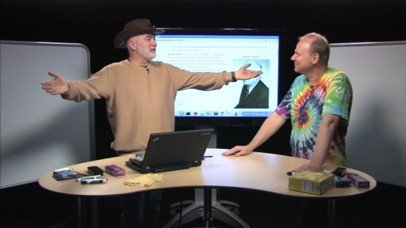

One of the truly great things about Brian Beckman and Erik Meijer is their natural ability to explain complex subject matter in ways normal people can readily understand, all while engaging and entert…
LINQ - Composability Guaranteed[WMV] [2012/03/09]It's been far too long since we've brought Erik Meijer and Brian Beckman together on Channel 9. Today marks the end of a drought and the beginning of more regular appearances by the dynamic duo. The b…
What is a database, really?[WMV] [2012/06/01]Alice wanders down a rabbit hole one day and finds Erik Meijer and Brian Beckman in the C9 studio. What's going to happen? What does she find? There's a plastic mouse, a hard drive, a hammer, database…
The Lambda Calculus, General Term Rewriting and Food Nutrition[WMV] [2012/06/26]Brian Beckman and Erik Meijer are back with another episode of BMO! In this installment, Brian and Erik spend some time explaining the Lambda Calculus and most of the time digging into a real world ap…